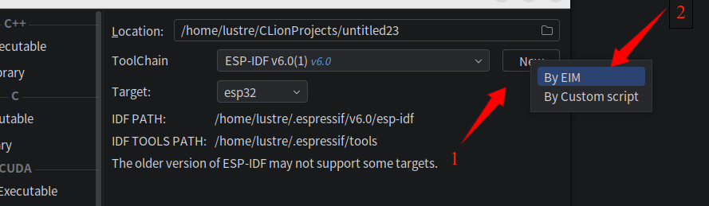
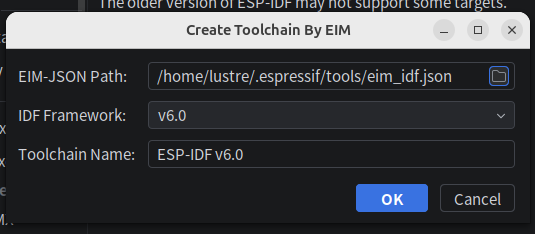
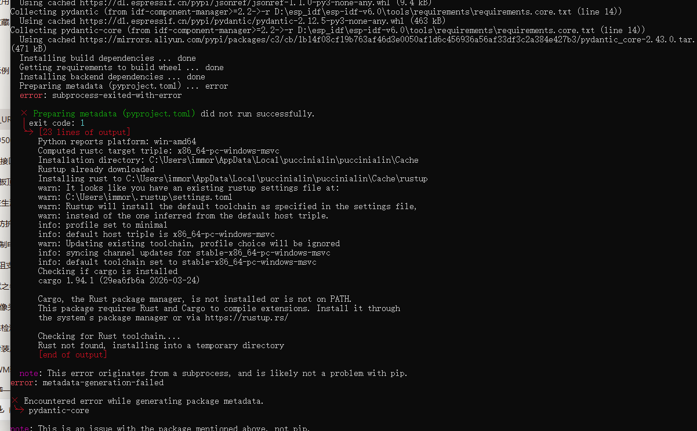
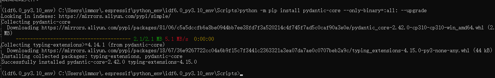
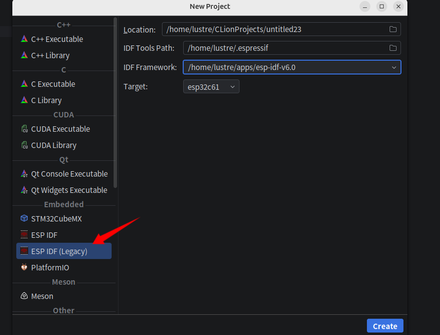
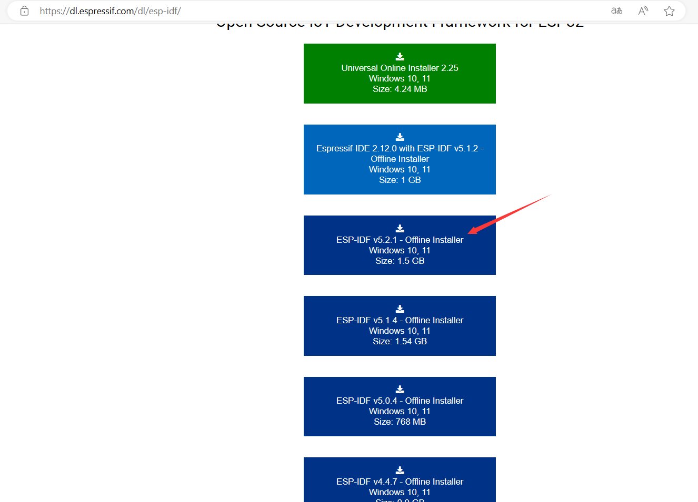
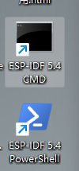
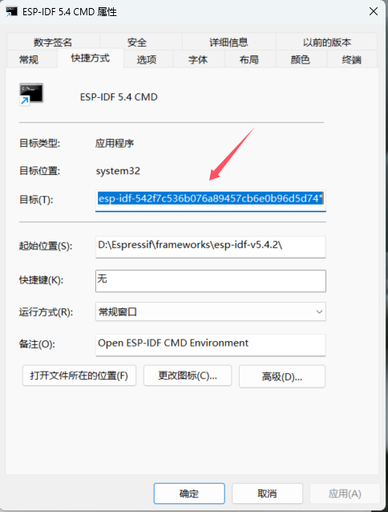
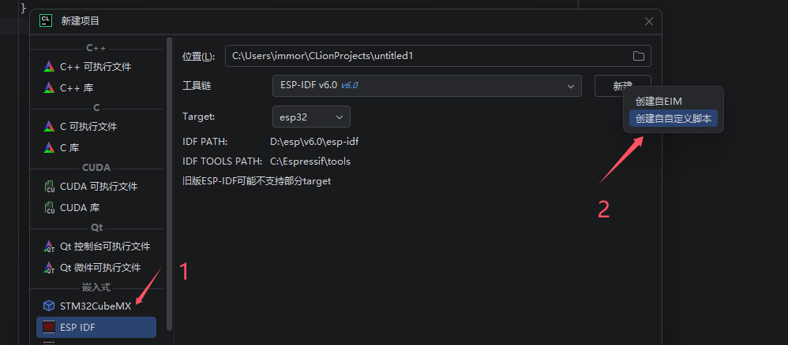
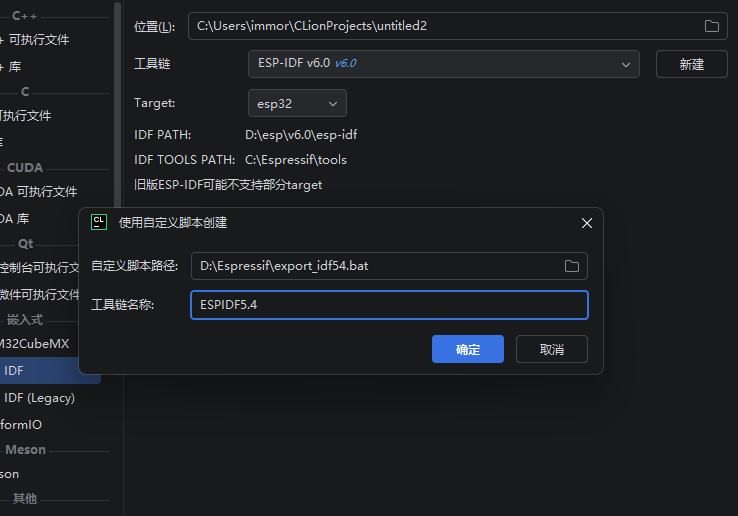

Windows下新建项目
选择通过EIM安装的ESP-IDF
通过EIM安装ESP-IDF
新建项目
首次新建项目通过EIM创建工具链
选择新建方式为EIM

选择eim_idf.json 文件 并选择具体esp-idf，至于工具链名称默认会生成，也可以自定义

确认后则可以新建一个工具链
源码安装
前置python git
克隆代码
在一个没有空格路径下打开cmd执行以下命令(powershell设置环境变量的方式不同)
以idf6.0为例，将idf6.0的release中附件esp-idf-v6.0.zip的url复制出，
然后替换github.com 到 dl.espressif.cn/github_assets
得到其乐鑫中国站下载地址如下:
https://dl.espressif.cn/github_assets/espressif/esp-idf/releases/download/v6.0/esp-idf-v6.0.zip
国内点此下载6.0 下载后解压到一个没有空格的目录
安装
安装会下载一些东西,根据需要选择后续是否使用镜像站
命令行进入源码目录，然后执行以下操作
install脚本python的编译报错

安装过程中会创建一个虚拟环境，然后pip安装一些依赖，直接安装可能遇到编译失败， 可以新开一个终端，加载虚拟环境的active 文件,再设置python镜像环境变量，仅仅安装二进制文件

虚拟环境一般在用户目录的 .espressif目录下python_env下,在cmd执行其active便可加载该虚拟环境，然后手动安装bin
新建项目

旧版离线安装ESP-IDF
ESP-IDF 工具安装器 安装
在该地址下载对应版本的ESP-IDF

选择一个 Offline Installer(离线安装器) ，无需使用加速器。
下载完成按向导安装，可以勾选附加的驱动。
制作自定义脚本
1.在桌面找到打开对应idf命令行的脚本

2.右键其中cmd脚本

3.复制其目标属性栏的值
例如内容如下
4.新建一个bat脚本比如:按idf版本叫做: export_idf54.bat. 增加上述目标栏复制出传给cmd的最后命令(根据本机查看属性操作的实际结果) "D:\Espressif\idf_cmd_init.bat" esp-idf-542f7c536b076a89457cb6e0b96d5d74
可以去除一层引号
5.选择该脚本创建工具链


给工具链取名，即可新建toolchain,便可以此新建idf项目